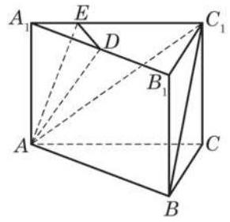
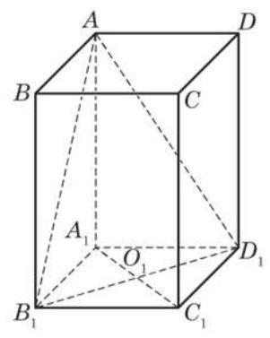
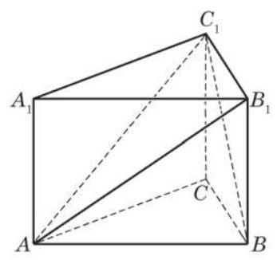
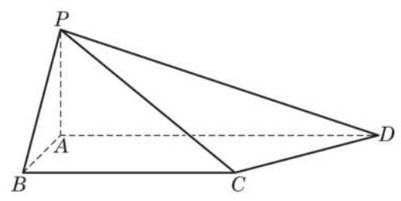
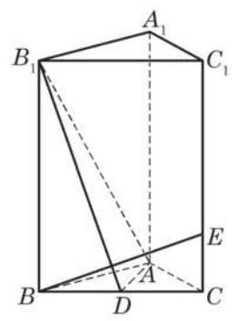
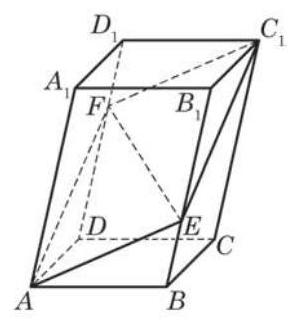
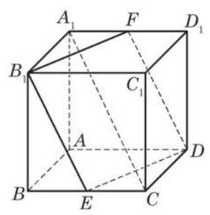
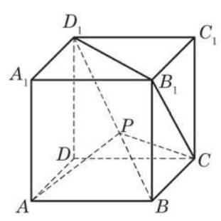
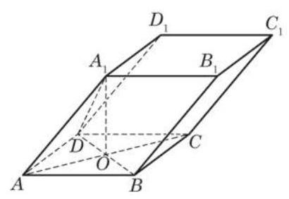

复习题A · 1
- 求连接点 与点 的线段 的中点 的坐标.
学生阅读版 / 沪教版高中数学
选择性必修第一册
第3章空间向量及其应用 · 保留教材主线与原题
教材与正式教参整合
(1)空间向量的定义和相关概念(模、零向量、单位向量、平行向量、相等向量、负向量等)与平面向量情形相同.
(2)对只与一组共面向量相关的问题，有关平面向量的定义与结论均适用. 特别地， 平面向量运算(加法、减法、与实数的乘法、数量积)的定义与性质直接适用于空间向量.
(1)向量共面的充要条件:如果 与 是两个不平行的向量，那么空间中的向量 与 共面的充要条件是:存在唯一的一对实数 与 ，使得 .
(2)空间向量基本定理:如果 与 是不共面的向量，那么对于空间中任一向量 ,存在唯一的一组实数 与 ,使得 . 也就是说,空间任意三个不共面的向量都组成空间向量的一个基.
(1)空间向量的坐标表示:建立空间直角坐标系，把向量 的起点放在坐标原点，该向量就直接用它的终点坐标 表示为 ，这个表示的意义是: 是坐标轴正方向上的单位向量 与 的线性组合 .
(2)给定空间两点 与 ，则 .
设向量 ,则
(1) ；
(2) ；
(3) ；
(4) .
设向量 均为非零向量，则
(1) ;
(2) ；
(3) .
空间中的直线和平面可以分别通过方向向量和法向量与空间向量联系起来，从而把立体几何的许多问题化为向量的问题加以解决.
(1)空间直线与平面之间的平行与垂直
(2)求距离
① 平面外一点 到平面的距离 由公式
给出，其中 是平面的一个法向量， 是平面上任意一点.
② 平面的平行线到平面的距离、平行平面间的距离均化为点到平面的距离来处理.
(3)求角的大小
(1)求 在 方向上的投影向量；
(2)求点 到平面 的距离.
(1)求证:平面 平面 ；
(2)求直线 和平面 所成角的大小.

(第 4 题)
(1)设 与底面 所成角的大小为 ，二面角 的大小为 . 求证: ;
(2)若点 到平面 的距离为 ，求此正四棱柱的高.

(第 6 题)
(1)求证: ；
(2)求点 到平面 的距离.

(第 7 题)
(1)求异面直线 与 所成角的大小；
(2)求四棱锥 的体积.

(第 8 题)
(1)求证: 平面 ；
(2)求二面角 的大小.

(第 9 题)
(1)求证: 、 、 、 四点共面；
(2)若 ，求 的值.

(第 2 题)
(1)求证:四边形 是菱形；
(2)求异面直线 与 所成角的大小.

(第 3 题)
(1)求证:点 在平面 上；
(2)求平面 与底面 所成二面角的大小.
(1)求证: ；
(2)若异面直线 与 所成角为 ，求 的值；
(3)当 为钝角时,求 的取值范围.

(第 1 题)
(1)求证: 平面 ；
(2)求平面 与平面 所成二面角的大小.

(第 2 题)